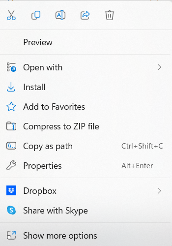

How to add a Variable Font to a Quarto PDF on Windows
Or: How I was driven completely insane by Google Fonts
Peter Licari ![]()

Created by Author & Easy Diffusion
This is one of those posts motivated by never ever wanting to subject anyone to the insanity that I experienced while struggling through what only seems to be a simple idea.
It was a simple dream, really. I was writing up a report in Quarto. I have an OpenType Google font that I’m fond of. I wanted to use said font in said document. Quarto supports custom fonts. It should be simple to put in my new font—right? RIGHT?!
(Click here to go directly to the solutions. Keep reading on if you want a bit of commentary and description of the problem. If it sounds like I went crazy, it’s because I did.)
The Problem
I’ve installed a Google font called Vollkorn—and I wanted to use it in a Quarto report that I was writing up. The Quarto documentation suggests that using custom fonts would be a pretty straightforward task: Just set mainfont in the YAML header to the name of your font family of choice and the fontspec Tex package would handle the rest on the back-end. And if I wanted to switch from the default font to something else already packaged with Windows (like Calibri or, because I’m just a troll at heart, Comic Sans), it’s very straight-forward!
Code
```{qmd}
---
title: "Example"
author: "Peter Licari"
editor: visual
---
## This is an example
Sphinx of black quartz, judge my vow!
```Output
Code
```{qmd}
---
title: "Example 2"
author: "Peter Licari"
format:
pdf:
mainfont: 'Comic Sans MS'
editor: visual
---
## This is an example
Sphinx of black quartz, judge my vow!
```Output
But let’s take a look at what comes up when I try to use Vollkorn:
```{r}
running xelatex - 1
This is XeTeX, Version 3.141592653-2.6-0.999994 (TeX Live 2022) (preloaded format=xelatex)
restricted \write18 enabled.
entering extended mode
updating tlmgr
updating existing packages
finding package for Vollkorn(-(Bold|Italic|Regular).*)?[.](tfm|afm|mf|otf|ttf)
compilation failed- no matching packages
Package fontspec Error: The font "Vollkorn" cannot be found.
```Which is incredibly frustrating because I can go to my Windows fonts1 I can clearly see the damn font there. All installed. Mockingly.
If I were to click-on and inspect the properties of the Vollkorn font and compare them to Comic Sans font, though, you’ll notice a couple of interesting things. First, as highlighted in yellow, the files are located in entirely separate roots! There are actually two ways we can solve this—but the bigger issue is with what’s highlighted in blue: Vollkorn is a Variable Font.
Variable fonts are a specific kind of font that offers more flexibility for designers than simply having separate, static versions for, say, bold, Italic, bold italic, etc. It turns out, however, that the default Quarto pdf render engine, xelatex does not play well with variable fonts. And by well I mean at all—it straight-up doesn’t work.
And what about the difference in file roots; what the heck is going on there? As I learned the hard way, this is actually standard behavior since at least Windows 10. When you install a font, you have to specify that you want it to be for all users. Only then will it go to the Windows/Fonts directory—which is where the fontspec LaTeX package looks by default. Otherwise, it’ll get installed within the AppData/Local directory. Hence why the error says the font couldn’t be found. I could find it, but it wasn’t where fontspec was looking! However, with Windows 11, the option to install for all users doesn’t initially appear when you right-click on the font to install it. Clicking “Install” will only install it locally.

The Solution(s):
There are actually a couple solutions for this: One that’s relatively simple and another that’s more involved. I’ll go simple, then go more involved. (Even though that is the exact opposite way that I discovered these solutions for my own purposes…)
Before doing dealing with either the simple or involved routes though, let’s go ahead and knock out the file path; we’ll need to know where the file lives in order for either solution to work.
1. Address the file’s, well, address.
You’ve got two options for this. The first is to uninstall the fonts2 and then re-install them so that they are installed for all users. You can accomplish this by selecting “Show more options” after right-clicking on the font file(s) you want to install. From there “Install for All Users” should be visible (it’ll often be accompanied by a little shield).
If you don’t want to reinstall the file, you can use the mainfontoptions parameter and redirect where fontspec is looking:
```{qmd}
---
title: "Example 3"
author: "Peter Licari"
format:
pdf:
mainfont: 'Vollkorn-Regular'
mainfontoptions:
- Path = C:/Users/prlic/AppData/Local/Microsoft/Windows/Fonts/
- Extension = .ttf
editor: visual
---
```For the remaining bit of advice, I’m going to assume that you’re going with the reinstall option. However, if you didn’t, all you’d have to do is make sure those two parts of mainfontoptions are specified.
2. Handle the Variable Font Type
The easy way:
While Quarto’s default Tex engine on Windows doesn’t play nice with variable fonts, one of the optional rendering engines, LuaLatex works well! So all you would have to do is specify the pdf-engine parameter:
```{qmd}
---
title: "Example 3"
author: "Peter Licari"
format:
pdf:
mainfont: 'Vollkorn-Regular'
pdf-engine: lualatex
editor: visual
---
```Why use xelatex over lulatex or vice-versa? There’s a couple interesting Reddit threads on the topic. It seems that LuaLatex is preferred but xelatex is a bit faster (possibly) and useful for backwards compatibility on older renders.
The more involved way
But let’s say that you’re committed to xelatex. Or you’re me and you didn’t realize that a way easier option existed the whole goddamn time prior to writing a blog post.3
Fortunately, many of the variable font styles available from Google Fonts also come pre-packaged with the so-called “Static” files (the aforementioned separate italic, bold, and bold-italic files). So instead of installing the variable-font, you would install all of the individual types, which you can set manually in mainfontoptions.
```{qmd}
---
title: "Example 3"
author: "Peter Licari"
format:
pdf:
mainfont: 'Vollkorn-Regular'
mainfontoptions:
- BoldFont = Vollkorn-Bold
- ItalicFont = Vollkorn-Italic
- BoldItalicFont= Vollkorn-Bolditalic
- Extension = .ttf
editor: visual
---
```Et viola!
Either way that you do it, you’ll be able to get the fonts loaded as you’d like!
I hope this was helpful to others and saved them the headache that I dealt with when trying to just make a simple report!
Footnotes
For those who want to find your fonts but don’t know how: Go to the search bar near the Windows logo on your desktop. Search “fonts”. It should pop up with a link to the fonts part of your control panel.↩︎
You can do this by going to the control panel, going to fonts, clicking into the fonts you want gone, and selecting “delete.”↩︎
On the one hand: I have always said that I write to think. On the other, man I wish I was a faster writer/thinker.↩︎
Reuse
Citation
@online{licari2023,
author = {Peter Licari},
title = {How to Add a {Variable} {Font} to a {Quarto} {PDF} on
{Windows}},
date = {2023-08-01},
url = {www.peterlicari.com/posts/quarto-custom-font-windows},
langid = {en}
}